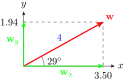

Example 9.22.
A vector \(\bf{w}\) has magnitude 4 and direction \(\theta =29\degree\text{,}\) where \(\theta\) is measured counter-clockwise from the positive \(x\)-axis. Express \(\bf{w}\) as the sum of a horizontal vector, \(\bf{w_x}\text{,}\) and a vertical vector, \(\bf{w_y}\text{.}\)
Solution.
The components of \(\bf{w}\) are given by
\begin{align*}
w_x \amp= \|{\bf{w}}\| \cos (\theta) \\
\amp= 4\cos (29\degree) = 3.50
\end{align*}
\begin{align*}
w_y \amp= \|{\bf{w}}\| \sin (\theta) \\
\amp= 4\sin (29\degree) = 1.94
\end{align*}

Then \(\bf{w} = \bf{w_x} + \bf{w_y}\text{,}\) where \(\bf{w_x}\) is a horizontal vector of magnitude 3.50, and \(\bf{w_y}\) is a vertical vector of magnitude 1.94. See the figure above.